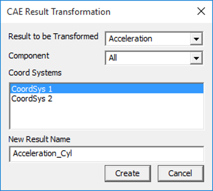
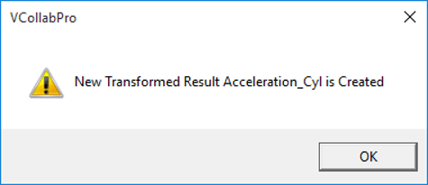

Create Results Using Coord System
VCollab Pro users can create a new CAE result from existing results in two ways- using Expressions and using Coordinate Systems.
For vector and tensor results, users can create a CAE result by transforming an existing result to a coordinate system defined by them. This is not applicable for scalar results.
Computation of New Result
The new result is computed by transforming the current vector / tensor result to a new coordinate system.
[New Result Vector / Tensor ] = [Coordinate Transformation] x [Current Result Vector / Tensor]
Result Transformation Panel

The various fields and options that appear in this panel are explained below.
| Result | Select the result to be transformed. This lists all vector and tensor results. Scalar results are not listed |
| Component | Lists all possible components and an option to transform all components. |
| Coord Systems | Lists all user defined coordinate systems and allows users to select one UCS for result transformation. |
| New Result Name | A default new result name is constructed based on selection. However users can edit it. |
| Create | Creates a new result into UCS. |
Note: Click here to learn how to create new coordinate systems.
Steps to create a new result using User Defined Coordinate System
- Make sure that at least one coordinate system is available for result transformation.
- Click CAE | Create Result | Using Coord Systems… to open the result transformation panel
- Select a Result, component and a user defined coordinate system from the list.
- Edit the new result name, if necessary.
- Click Create.
- If successful, the following message will be shown.

- The new result will be added to the result list dialog.